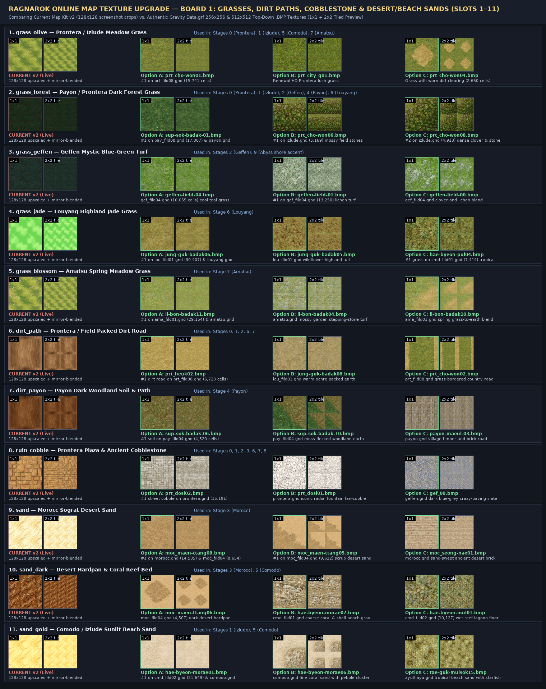
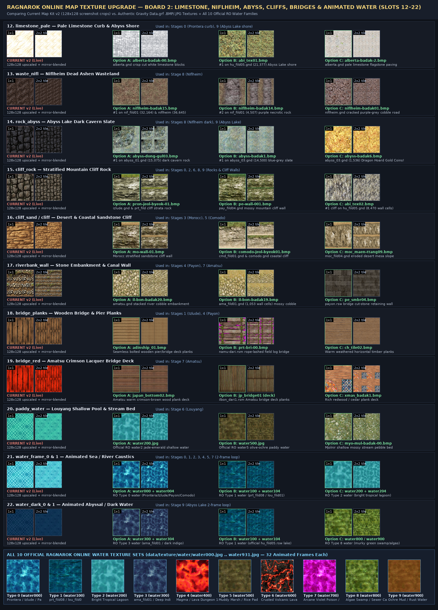

Prontera Grind — Authentic Ragnarok Online (Data.grf) Map Texture Upgrade Catalog
Extracted directly from Gravity's official Data.grf (data/texture/필드바닥/ 256×256 .BMP, prontera_re/ 512×512 .BMP, 기타마을/, and 워터/ 128×128 animated caustics) and cross-referenced against the exact cell usage counts in each region's official .gnd & .rsw map files.
Ragnarok Online 3 (RO3) Reference Look — Why RO3 Floors Look Seamless & Non-Boxy
In Ragnarok Online 3, the map floor avoids the repetitive, boxy grid look in two ways:
(1) De-gridded, low-contrast painterly base textures (no high-contrast blotches that repeat every tile), and
(2) Continuous Splatmap Terrain Blending (grass, shade turf, winding dirt roads, radial stone gate aprons, and wet shorelines feather smoothly into each other with soft overhead canopy shadows instead of stamping 90° square cells).

RO3 Prontera South Gate
Velvety grass, feathered dirt clearing & dappled tree shade

RO3 Coastal Field
Smooth sandy earth blending organically into lush turf

RO3 Poring Island Beach
Seamless golden sand with palm shadows & coastal grass

RO3 Prontera Cobble Street
Warm low-contrast cobblestone with soft mortar joints
All 10 Stages — Boxy Tile-Grid Floor vs. RO3 Seamless Splatmap Floor
Because Prontera-Grind renders its ground onto a single 2048×2048 HTML5 canvas (kitGroundTex in index.html), we can replace the boxy 48×48 cell stamping directly with this continuous RO3 splatmap renderer.

BEFORE: Boxy Tile-Grid Floor
Hard 90° square cells create stair-stepped roads & repetitive grid seams

OPTION A: Seamless Splatmap Floor (Clean)
Continuous noise-blended turf, feathered winding road, radial stone apron & wet shore

OPTION B: RO3 Seamless Floor + Canopy Light
Adds RO3 dappled tree-canopy shade & warm sunlit battle clearing glow

BEFORE: Boxy Tile-Grid Floor
Hard 90° square cells create stair-stepped roads & repetitive grid seams

OPTION A: Seamless Splatmap Floor (Clean)
Continuous noise-blended turf, feathered winding road, radial stone apron & wet shore

OPTION B: RO3 Seamless Floor + Canopy Light
Adds RO3 dappled tree-canopy shade & warm sunlit battle clearing glow

BEFORE: Boxy Tile-Grid Floor
Hard 90° square cells create stair-stepped roads & repetitive grid seams

OPTION A: Seamless Splatmap Floor (Clean)
Continuous noise-blended turf, feathered winding road, radial stone apron & wet shore

OPTION B: RO3 Seamless Floor + Canopy Light
Adds RO3 dappled tree-canopy shade & warm sunlit battle clearing glow

BEFORE: Boxy Tile-Grid Floor
Hard 90° square cells create stair-stepped roads & repetitive grid seams

OPTION A: Seamless Splatmap Floor (Clean)
Continuous noise-blended turf, feathered winding road, radial stone apron & wet shore

OPTION B: RO3 Seamless Floor + Canopy Light
Adds RO3 dappled tree-canopy shade & warm sunlit battle clearing glow

BEFORE: Boxy Tile-Grid Floor
Hard 90° square cells create stair-stepped roads & repetitive grid seams

OPTION A: Seamless Splatmap Floor (Clean)
Continuous noise-blended turf, feathered winding road, radial stone apron & wet shore

OPTION B: RO3 Seamless Floor + Canopy Light
Adds RO3 dappled tree-canopy shade & warm sunlit battle clearing glow

BEFORE: Boxy Tile-Grid Floor
Hard 90° square cells create stair-stepped roads & repetitive grid seams

OPTION A: Seamless Splatmap Floor (Clean)
Continuous noise-blended turf, feathered winding road, radial stone apron & wet shore

OPTION B: RO3 Seamless Floor + Canopy Light
Adds RO3 dappled tree-canopy shade & warm sunlit battle clearing glow

BEFORE: Boxy Tile-Grid Floor
Hard 90° square cells create stair-stepped roads & repetitive grid seams

OPTION A: Seamless Splatmap Floor (Clean)
Continuous noise-blended turf, feathered winding road, radial stone apron & wet shore

OPTION B: RO3 Seamless Floor + Canopy Light
Adds RO3 dappled tree-canopy shade & warm sunlit battle clearing glow

BEFORE: Boxy Tile-Grid Floor
Hard 90° square cells create stair-stepped roads & repetitive grid seams

OPTION A: Seamless Splatmap Floor (Clean)
Continuous noise-blended turf, feathered winding road, radial stone apron & wet shore

OPTION B: RO3 Seamless Floor + Canopy Light
Adds RO3 dappled tree-canopy shade & warm sunlit battle clearing glow

BEFORE: Boxy Tile-Grid Floor
Hard 90° square cells create stair-stepped roads & repetitive grid seams

OPTION A: Seamless Splatmap Floor (Clean)
Continuous noise-blended turf, feathered winding road, radial stone apron & wet shore

OPTION B: RO3 Seamless Floor + Canopy Light
Adds RO3 dappled tree-canopy shade & warm sunlit battle clearing glow

BEFORE: Boxy Tile-Grid Floor
Hard 90° square cells create stair-stepped roads & repetitive grid seams

OPTION A: Seamless Splatmap Floor (Clean)
Continuous noise-blended turf, feathered winding road, radial stone apron & wet shore

OPTION B: RO3 Seamless Floor + Canopy Light
Adds RO3 dappled tree-canopy shade & warm sunlit battle clearing glow
De-Gridded 4×4 Seamless Tile Comparison (16 Tiles Side-by-Side)
CURRENT v2 (Live Screenshot Crop)
128×128 upscaled + mirror-blended
Blurry 100x100 screenshot crop (prt_fild08_1.jpg)
Option A (Primary .gnd)
필드바닥\prt_초원01.bmp (256x256)
#1 on prt_fild08.gnd (15,741 cells) & prontera.gnd (6,189 cells)
Option B (Renewal HD)
prontera_re\prt_city_g01.bmp (512x512)
Official Renewal HD Prontera lush meadow grass
Option C (Clearing Accent)
필드바닥\prt_초원04.bmp (256x256)
prt_fild08.gnd (2,650 cells) grass with natural worn earth patch
CURRENT v2 (Live Screenshot Crop)
128×128 upscaled + mirror-blended
Darkened 95x95 screenshot crop (prt_fild08_1.jpg)
Option A (Payon Primary .gnd)
필드바닥\숲속바닥-01.bmp (256x256)
#1 on pay_fild08.gnd (17,307 cells) & payon.gnd (9,848 cells)
Option B (Izlude/Prontera Mossy)
필드바닥\prt_초원06.bmp (256x256)
#1 on izlude.gnd (5,169 cells) & prt_fild08 (1,789 cells) mossy stones
Option C (Dense Clover/Stone)
필드바닥\prt_초원08.bmp (256x256)
#2 on izlude.gnd (4,913 cells) dark clover & field stones
CURRENT v2 (Live Screenshot Crop)
128×128 upscaled + mirror-blended
100x100 screenshot crop (gef_fild04_2.jpg)
Option A (Geffen Emerald-Teal)
필드바닥\게펜필드-04.bmp (256x256)
gef_fild04.gnd (10,055 cells) cool blue-green Geffen turf
Option B (Geffen #1 Lichen)
필드바닥\게펜필드-01.bmp (256x256)
#1 on gef_fild04.gnd (13,250 cells) pale lichen-dappled grass
Option C (Geffen Blend)
필드바닥\게펜필드-00.bmp (256x256)
gef_fild04.gnd clover & lichen transition turf
CURRENT v2 (Live Screenshot Crop)
128×128 upscaled + mirror-blended
Screenshot crop with @grid lines baked in!
Option A (Louyang #1 .gnd)
필드바닥\중국바닥06.bmp (256x256)
#1 on lou_fild01.gnd (30,407 cells) & louyang.gnd (20,762 cells)
Option B (Louyang Wildflower)
필드바닥\중국바닥05.bmp (256x256)
lou_fild01.gnd (935 cells) wildflower-flecked highland grass
Option C (Comodo Tropical)
필드바닥\해변풀바닥04.bmp (256x256)
#1 grass on cmd_fild01.gnd (7,414 cells) lush tropical turf
CURRENT v2 (Live Screenshot Crop)
128×128 upscaled + mirror-blended
100x100 screenshot crop (ama_fild01_1.jpg)
Option A (Amatsu #1 .gnd)
필드바닥\일본바닥11.bmp (256x256)
#1 on ama_fild01.gnd (29,154 cells) & amatsu.gnd (7,077 cells)
Option B (Amatsu Garden Stone)
필드바닥\일본바닥04.bmp (256x256)
amatsu.gnd mossy Japanese garden stepping-stone grass
Option C (Amatsu Meadow Blend)
필드바닥\일본바닥10.bmp (256x256)
ama_fild01.gnd (1,458 cells) spring grass-to-earth blend
CURRENT v2 (Live Screenshot Crop)
128×128 upscaled + mirror-blended
Mirror-blended wood-grain artifact from screenshot!
Option A (Prontera #1 Dirt .gnd)
필드바닥\prt_흙02.bmp (256x256)
#1 dirt road on prt_fild08.gnd (6,723 cells) & prontera.gnd
Option B (Louyang/Amatsu Dirt)
필드바닥\중국바닥08.bmp (256x256)
lou_fild01.gnd (1,334 cells) warm ochre packed dirt trail
Option C (Grass-Bordered Road)
필드바닥\prt_초원02.bmp (256x256)
prt_fild08.gnd (1,210 cells) country dirt road with grass borders
CURRENT v2 (Live Screenshot Crop)
128×128 upscaled + mirror-blended
100x100 screenshot crop with mirror seam
Option A (Payon #1 Soil .gnd)
필드바닥\숲속바닥-06.bmp (256x256)
#1 woodland soil on pay_fild04.gnd (4,520 cells) & payon.gnd
Option B (Moss-Bordered Soil)
필드바닥\숲속바닥-10.bmp (256x256)
pay_fild04.gnd (1,123 cells) mossy dark forest trail
Option C (Payon Village Brick)
필드바닥\페이욘마을바닥-03.bmp (256x256)
payon.gnd village timber-and-brick walkway
CURRENT v2 (Live Screenshot Crop)
128×128 upscaled + mirror-blended
Tiny 65x65 angled screenshot crop (gef_fild04_1.jpg)
Option A (Prontera #1 Street)
필드바닥\prt_도시02.bmp (256x256)
#1 street cobble on prontera.gnd (15,191 cells) & izlude.gnd
Option B (Prontera Radial Plaza)
필드바닥\prt_도시01.bmp (256x256)
prontera.gnd (1,458 cells) iconic radial fountain fan-paving
Option C (Geffen Dark Slate)
필드바닥\gef_00.bmp (256x256)
geffen.gnd (1,341 cells) dark blue-grey crazy-paving flagstones
CURRENT v2 (Live Screenshot Crop)
128×128 upscaled + mirror-blended
Washed-out 75x75 screenshot crop with + seam
Option A (Morocc #1 Sand .gnd)
필드바닥\moc_맨땅08.bmp (256x256)
#1 on morocc.gnd (14,535 cells) & moc_fild04.gnd (8,654 cells)
Option B (Scrub Desert Sand)
필드바닥\moc_맨땅05.bmp (256x256)
#1 on moc_fild04.gnd (9,622 cells) desert sand with dry scrub edge
Option C (Morocc Ruin Brick)
필드바닥\moc_성내01.bmp (256x256)
morocc.gnd sand-dusted ancient sandstone pavement
CURRENT v2 (Live Screenshot Crop)
128×128 upscaled + mirror-blended
85x85 screenshot crop with mirror cross
Option A (Morocc Dark Hardpan)
필드바닥\moc_맨땅06.bmp (256x256)
moc_fild04.gnd (4,507 cells) desert sand with dark rocky hardpan
Option B (Comodo Shell Gravel)
필드바닥\해변모래바닥07.bmp (256x256)
cmd_fild01.gnd coarse coral & shell beach gravel
Option C (Comodo Lagoon Bed)
필드바닥\해변물바닥01.bmp (256x256)
cmd_fild02.gnd (10,127 cells) dark wet reef lagoon floor
CURRENT v2 (Live Screenshot Crop)
128×128 upscaled + mirror-blended
100x100 screenshot crop with horizontal streaks
Option A (Comodo #1 Beach .gnd)
필드바닥\해변모래바닥01.bmp (256x256)
#1 on cmd_fild02.gnd (21,649 cells) & comodo.gnd (8,365 cells)
Option B (Pebble Beach Sand)
필드바닥\해변모래바닥06.bmp (256x256)
comodo.gnd sunlit coral sand with natural pebble cluster
Option C (Starfish Coral Sand)
필드바닥\태국물속15.bmp (256x256)
ayothaya.gnd tropical beach sand with starfish & shells
CURRENT v2 (Live Screenshot Crop)
128×128 upscaled + mirror-blended
Overexposed white blur from screenshot
Option A (Cut White Limestone)
필드바닥\알베르타마을바닥-00.bmp (256x256)
alberta.gnd crisp white-grey cut limestone ashlar blocks
Option B (Abyss Shore #1 .gnd)
필드바닥\abi_tex01.bmp (256x256)
#1 on hu_fild05.gnd (21,377 cells) Abyss Lake limestone & scrub
Option C (Limestone Flagstone)
필드바닥\알베르타마을바닥-2.bmp (256x256)
alberta.gnd pale limestone crazy-paving flagstones
CURRENT v2 (Live Screenshot Crop)
128×128 upscaled + mirror-blended
115x115 angled screenshot crop (nif_fild01_2.jpg)
Option A (Niflheim #1 Ash .gnd)
필드바닥\니플헤임바닥15.bmp (256x256)
#1 on nif_fild01.gnd (32,164 cells) & niflheim.gnd (36,645 cells)
Option B (Bruised Necrotic Rock)
필드바닥\니플헤임바닥14.bmp (256x256)
#2 on nif_fild01.gnd (4,507 cells) purple necrotic rock & ash
Option C (Niflheim Cracked Cobble)
필드바닥\니플헤임바닥01.bmp (256x256)
niflheim.gnd (729 cells) cracked purple-grey cobblestone road
CURRENT v2 (Live Screenshot Crop)
128×128 upscaled + mirror-blended
100x100 dark cobble screenshot crop
Option A (Abyss Cavern #1 .gnd)
필드바닥\어비스동굴03.bmp (256x256)
#1 on abyss_01.gnd (15,075 cells) dark crystalline cavern rock
Option B (Abyss Blue-Grey Slate)
필드바닥\어비스바닥1.bmp (256x256)
#1 on abyss_03.gnd (14,500 cells) blue-grey abyssal slate floor
Option C (Dragon Hoard Gold!)
필드바닥\어비스바닥6.bmp (256x256)
abyss_03.gnd (1,536 cells) glittering Dragon Treasure Gold Coins!
CURRENT v2 (Live Screenshot Crop)
128×128 upscaled + mirror-blended
105x105 screenshot crop (prt_fild08_3.jpg)
Option A (Prontera/Izlude Cliff)
필드바닥\프론절벽-01.bmp (256x256)
izlude.gnd & Prontera field horizontally stratified cliff rock
Option B (Payon Mossy Cliff)
필드바닥\pe-wall-001.bmp (256x256)
pay_fild04.gnd mossy craggy mountain cliff wall
Option C (Abyss Limestone Cliff)
필드바닥\abi_tex02.bmp (256x256)
#1 cliff on hu_fild05.gnd (8,470 wall cells) jagged limestone
CURRENT v2 (Live Screenshot Crop)
128×128 upscaled + mirror-blended
110x110 screenshot crop (moc_fild04_2.jpg)
Option A (Morocc Cliff Wall)
필드바닥\mo-wall-01.bmp (256x256)
Morocc stratified desert sandstone cliff wall
Option B (Comodo Coastal Cliff)
필드바닥\코모도절벽01.bmp (256x256)
cmd_fild01.gnd & comodo.gnd warm coastal sandstone cliff
Option C (Desert Mesa Slope)
필드바닥\moc_맨땅09.bmp (256x256)
moc_fild04.gnd eroded desert mesa cliff slope
CURRENT v2 (Live Screenshot Crop)
128×128 upscaled + mirror-blended
80x80 screenshot crop (ama_fild01_2.jpg)
Option A (Amatsu River Cobble)
필드바닥\일본바닥20.bmp (256x256)
amatsu.gnd stacked river cobble embankment wall
Option B (Grass-Topped Cobble)
필드바닥\일본바닥19.bmp (256x256)
ama_fild01.gnd (1,053 wall cells) grass-rimmed river stone bank
Option C (Payon Cut-Stone Wall)
기타마을\pe_smbr04.bmp (256x128)
payon.rsw bridge cut-stone retaining wall
CURRENT v2 (Live Screenshot Crop)
128×128 upscaled + mirror-blended
72x80 angled screenshot crop (izlude_3.jpg)
Option A (Bolted Pier Planks)
기타마을내부\adinship_01.bmp (128x128)
Seamless bolted wooden pier & ship deck planks
Option B (Lashed Log Bridge)
외부소품\prt-bri-00.bmp (256x256)
나무다리.rsm rope-lashed rustic wooden log bridge
Option C (Weathered Planks)
기타마을내부\ch_tile02.bmp (256x128)
Louyang / Payon warm weathered timber planks
CURRENT v2 (Live Screenshot Crop)
128×128 upscaled + mirror-blended
60x60 screenshot crop (ama_fild01_1.jpg)
Option A (Amatsu Redwood Deck)
기타마을내부\japan_bottom02.bmp (128x128)
Amatsu warm crimson-brown wood plank flooring
Option B (Taiko-bashi Deck)
기타마을\jp_bridge01.bmp (256x128)
일본_다리1.rsm Amatsu arched bridge deck planks
Option C (Cedar/Redwood Planks)
기타마을내부\xmas_바닥1.bmp (256x256)
Rich warm cedar/redwood plank deck
CURRENT v2 (Live Screenshot Crop)
128×128 upscaled + mirror-blended
Screenshot crop with @grid lines baked in!
Option A (RO Water Type 2)
워터\water200.jpg (128x128)
Official RO water2 shallow jade-emerald lagoon water
Option B (RO Water Type 5)
워터\water500.jpg (128x128)
Official RO water5 olive-ochre muddy paddy water
Option C (Mossy Stream Bed)
필드바닥\묘르닐물바닥-00.bmp (256x256)
Mjolnir shallow mossy stream pebble bed
CURRENT v2 (Live Screenshot Crop)
128×128 upscaled + mirror-blended
Cyan diamond grid screenshot crop!
Option A (RO Water Type 0 Pair)
워터\water000.jpg + water004.jpg (128x128)
Official RO Type 0 water (Prontera, Izlude, Geffen, Morocc, Payon, Comodo)
Option B (RO Water Type 1 Pair)
워터\water100.jpg + water104.jpg (128x128)
Official RO Type 1 water (prt_fild08, lou_fild01, hu_fild05)
Option C (RO Water Type 2 Pair)
워터\water200.jpg + water204.jpg (128x128)
Official RO Type 2 water (bright tropical turquoise)
CURRENT v2 (Live Screenshot Crop)
128×128 upscaled + mirror-blended
Dark screenshot crops with grid lines
Option A (RO Water Type 3 Pair)
워터\water300.jpg + water304.jpg (128x128)
Official RO Type 3 water (ama_fild01 & deep indigo dungeons)
Option B (RO Water Type 1 Pair)
워터\water100.jpg + water104.jpg (128x128)
Official RO Type 1 water (actual hu_fild05.rsw Abyss Lake water)
Option C (RO Water Type 8 Swamp)
워터\water800.jpg (128x128)
Official RO Type 8 water (murky green algae swamp)
All 10 Stages Side-by-Side Simulated Field Composite (Current v2 vs. Authentic Data.grf)
Left column shows the current live Map Kit v2 (128×128 screenshot crops); right column shows the exact same stage palette rendered with authentic 256×256 Data.grf .bmp & .jpg textures.
All 10 Official Ragnarok Online Animated Water Texture Families (data/texture/워터/water000..931.jpg)
Top row animates live every 550ms (matching index.html's kitWaterMeshes timer) between Frame 0 and Frame 4 of the official RO .rsw water sets.
LIVE 2x2
Type 0 (water000 + 004)
Prontera, Izlude, Geffen, Morocc, Payon, Comodo
LIVE 2x2
Type 1 (water100 + 104)
prt_fild08, lou_fild01, hu_fild05 (Abyss Lake)
LIVE 2x2
Type 2 (water200 + 204)
Bright Tropical Lagoon / Shallow Pool
LIVE 2x2
Type 3 (water300 + 304)
ama_fild01 & Deep Indigo Cavern Water
LIVE 2x2
Type 5 (water500 + 504)
Louyang Paddy / Olive Marsh Water
2x2
Type 4 (water400)
Magma Dungeon Lava
2x2
Type 6 (water600)
Thor Volcano Crusted Lava
2x2
Type 7 (water700)
Niflheim / Arcane Violet Water
2x2
Type 8 (water800)
Glast Heim / Algae Canal Water
2x2
Type 9 (water900)
Ochre Mud / Rust Water
Full High-Resolution Comparison Boards

